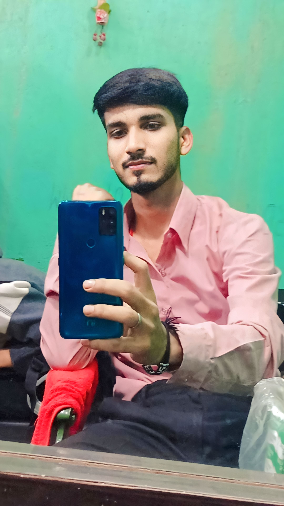

<!DOCTYPE html>
<html lang="en">
<head>
    <meta charset="UTF-8">
    <meta http-equiv="X-UA-Compatible" content="IE=edge">
    <meta name="viewport" content="width=device-width, initial-scale=1.0">
    <title>MS DHONI (The Legend)</title>
    <link rel="stylesheet" href="style.css">
    <link rel="stylesheet" href="https://cdnjs.cloudflare.com/ajax/libs/font-awesome/4.7.0/css/font-awesome.min.css">
    
    <script src="https://unpkg.com/ionicons@5.4.0/dist/ionicons.js"></script>
</head>

<body>
  
    <nav class="navbar">

        <ul>
            <li><a href="#" target="_blank">HOME</a></li>
            <li><a href="#About" target="_blank">ABOUT</a></li>
            <li><a href="#img" target="_blank">IMAGES</a></li>
            <li><a href="#h4" target="blank">QUOTES </a></li>
            <li><a href="#contact" target="blank">CONTACT US </a></li>
        </ul>
    </nav>
    <div class="heading">
        MS DHONI: THE MAN, THE MYTH, THE LEGEND.
    </div>
    <div class="content">
        <div class="main-content">
         <p class="main-image" id="main-image"> </p>
          <h1 id="About">About</h1>
         <li id="about">Mahendra Singh Dhoni ; born 7 July 1981, commonly known as MS Dhoni, is a former Indian cricketer and captain 
            of the Indian national team in limited-overs formats from 2007 to 2017 and in Test cricket from 2008 to 2014, who plays as a Wicket-keeper-Batsman.
             He is also the current captain of Chennai Super Kings in the Indian Premier League. He is the first cricketer to be a winning captain of all three
              major ICC trophies, as under his captaincy, India won the 2007 ICC World Twenty20, the 2011 Cricket World Cup, and the 2013 ICC Champions Trophy,
               the most by any captain. He also led India to victory in the 2010 and 2016 Asia Cup. Additionally, under his leadership, India won the 2010 and 
               2011 ICC Test Mace and 2013 ICC ODI Championship. He has scored 17,266 runs in International Cricket (including 10,000 plus runs in ODI Internationals).
                Dhoni is a right-handed wicket-keeper batsman known for his calm captaincy and his ability to finish matches in tight situations for these reasons he
                 is considered one of the best finishers in the game ever, as well as one of the greatest wicket-keepers and captains in the history of cricket.

            Born in Ranchi, Bihar (now in Jharkhand),[2][3] His exceptional wicketkeeping skills allowed him to become the regular wicketkeeper at the Commando Cricket
             Club (1995–1998), he was picked for the 1997/98 season Vinoo Mankad Trophy Under-16 Championship, where he performed well.[4] From 2001 to 2003, He worked 
             as a Travelling Ticket Examiner at Kharagpur railway station under South Eastern Railway in Midnapore, in West Bengal.[5][6] In Indian domestic cricket he 
             played for Bihar and then for Jharkhand Cricket team. Dhoni's performance in the 2002–03 season included three half-centuries in the Ranji Trophy and a couple 
             of half-centuries in the Deodhar Trophy, as he started gaining recognition for his lower-order contribution as well as hard-hitting batting style.
            
            Dhoni made his ODI debut on 23 December 2004, against Bangladesh in Chittagong,[7] and played his first Test a year later against Sri Lanka.[8] He played his
             first T20I also a year later against South Africa.[9] In 2007, he took over the ODI captaincy from Rahul Dravid and he also selected as T20I captain of India
              in this year.[10] In 2008, he was selected as Test captain.[11] His captaincy record in Tests format was mixed, successfully leading India to a series win
               against New Zealand in 2008 and the Border-Gavaskar Trophy (home series in 2010 and 2013) against Australia.[12]
            
            He is the captain of Chennai Super Kings (CSK) in the Indian Premier League, leading them to the final on 9 occasions and winning in the 2010, 2011, 2018 and 
            2021 editions of the league, as well as winning the Champions League T20 two times, in 2010 and 2014. He is the 7th cricketer have scored more than 5,000 runs
             in the IPL, as well as being the first wicket-keeper to do so.
            
            Dhoni received India's highest sports honour, the Major Dhyanchand Khel Ratna Award in 2008 for his outstanding achievements and the Government of India honoured
             him India's fourth civilian award Padma Shri in 2009 and third civilian award Padma Bhushan in 2018. He is the only cricket captain in the world to win all three
              of the Cricket World Cup, ICC Men's T20 World Cup and ICC Champions Trophy. Dhoni holds an honorary rank of Lieutenant Colonel in the Parachute Regiment of the
               Indian Territorial Army,[13] it was presented to him by the Indian Army in 2011 for his service to the nation as a cricketer.[14] Dhoni is considered one of 
               the most popular cricketer in the world.[15] He is a leading brand endorser celebrity in India.
            
            He announced his retirement from Tests on 30 December 2014,[16] and stepped down as captain of T20Is and ODIs in 2017. On 15 August 2020, Dhoni retired from all
             formats of international cricket and continues to play in the IPL.</li>
        </div>
        <div class="achievements">
             <h1 id="h2"> #ACHIEVEMENTS </h1>
              <UL>
                <li>MS DHONI is the first wicket-keeper to score 183* runs in ODI.</li>
                <li>He is the fastest player to reach No. 1 position in ICC Ranking (Only 38 innings).</li>
                <li>Dhoni has the most Stumpings(123) by any wicket-keeper in an ODI career.
                    Dhoni holds the records of the most dismissals in an innings (6) and career (432) by an Indian wicket-keeper.</li>
                <li>He is the First Indian and fifth overall to hit 200 sixes in ODIs.</li>
                <li> The first player to pass 10,000 runs in ODI cricket with having a career average of over 50.</li>
                <li>He is the only player to score more than one hundred in ODI cricket when batting at number 7 position or lower (Dhoni has 2 centuries at number 7).</li>
                <li>MS Dhoni is the only man to win all three of the ICC Cricket World Cup, ICC World Twenty20, and ICC Champions Trophy as captain</li>
                <li>MS Dhoni holds the record for the highest number of dismissals by an Indian wicket-keeper in ODI- 444 (321 catches, 123 stumpings).</li>
                <li>The only wicket-keeper to go beyond 100 stumpings in ODI history. He has made a total of 123 stumpings. The second in the list is Kumar Sangakkara, with 99 stumpings.</li>
                <li>The former Indian wicketkeeper-batsman holds the record for the most number of stumpings in International cricket -195.</li>
                <li>Dhoni is the only Indian wicket-keeper who has dismissed 829 wickets, which includes 634 catches and 195 stumpings.</li>
                <li>Under MS Dhoni’s captaincy, Chennai Super Kings have won four IPL titles and two Champions League titles.</li>
                <li>MS Dhoni also becomes the oldest skipper to win the tournament when CSK lifted IPL 2021 trophy. The 40-year-old edged past Shane Warne had won the inaugural edition with
                     Rajasthan Royals at the age of 39 and Adam Gilchrist who guided Deccan Chargers to IPL victory in the 2009 season at the age of 37.</li>
             </UL>
        </div>
        <div class="awards">
          <h1 id="h3">#NATIONAL HONOURS RECEIVED</h1> 
          <div class="khel-rtn">
            
           </div>
           <div class="pdmbsn-txt">
             RAJIV GANDHI KHEL RATNA(2007)
           </div> <br>
          <div class="pdmshr-img">
            
          </div>
          <div class="pdmshr-txt">
            PADMA SHREE(2009)
          </div> <br>
         <div class="pdmbsn-img">
            
         </div>
         <div class="pdmbsn-txt">
             PADMA BHUSHAN(2018)
         </div> <br>
        </div>
      <div class="QUOTES">
        <h1 id="h4"># Who said what</h1>
       <blockquote>"Dhoni is the best captain I have played under."
        <footer>
        <cite>~~ SACHIN TENDULKAR</cite>
        </footer>
        <p>
      </blockquote>
      <blockquote>
        "I am really lucky to play under the leadership of MSD."
        <footer>
            <cite>~~ MICHAEL HUSSEY</cite>
        </footer>
        <p>
      </blockquote>
      <blockquote>
        "Dhoni is the greatest captain of our country. His record is proof of that."
        <footer>
            <cite>~~ Sourav Ganguly</cite>
        </footer>
        <p>
      </blockquote>
      <blockquote>
        "Dhoni is my Hero. We talk a lot about Sachin Tendulkar & Virendar Sehwag, But this boy has as much as talent as anyone on the game"
        <footer>
            <cite>~~ KAPIL DEV</cite>
        </footer>
        <p>
      </blockquote>
      <blockquote>
        "MS Dhoni still the best bet as Test, ODI captain. No calmer finisher than Dhoni"
        <footer>
            <cite>~~ Harsha Bhogle</cite>
        </footer>
        <p>
      </blockquote>
      <blockquote>
        "When I die, the last thing I want to see is the six that Dhoni hit in the 2011 World Cup final"
        <footer>
            <cite>~~ Sunil Gavaskar </cite>
        </footer>
        <p>
      </blockquote>
      <hr style="border:1px dashed grey">
      <hr style="border:1px dashed grey">
      <a href="https://www.scoopwhoop.com/sports/dhoni-quotes/#.igprjk79g" target="_blank" class="more-btn" role="button">
        More Quotes here </a>
     </div>
     <div class="images" id="img">
      IMAGES
      <p>
      <u class="i-txt">Young Dhoni</u>
      <p>
      <u class="i-txt">Long haired Dhoni</u>
      <p>
      <u class="i-txt">T-20 World Cup</u>
      <p>
      <u class="i-txt">2011 ODI WORLD CUP</u>
      <p>
      <u class="i-txt">2013 Champions trophy</u>
     </div>
    <footer>
      <div class="CONTACT">
        <h1 id="contact">CONTACT US</h1>
        <h2>Email Id: Kumar1210ankit@gmail.com</h2>
        <div class="logo">
          <a href="https://instagram.com/ankt_mishra07?igshid=ZmZhODViOGI=" class="fa fa-instagram"></a>
          <a href="https://www.facebook.com/profile.php?id=100041078685883" class="fa fa-facebook"></a>
          <a href="#" class="fa fa-linkedin"></a>
          <!-- <a href="https://instagram.com/ankt_mishra07?igshid=ZmZhODViOGI=" target="_blank" alt="not loading"><ion-icon name="logo-instagram" id="insta"></ion-icon></a> -->
        </div>
        <div class="dev-img">
          <h2>Developer:- Ankit Mishra</h2>
          <p></p>
        </div>
        <div class="cpy-txt">
          <b> copyright&#169 is reserved to the original owner of the website.</b>
          <b> Thank You for visiting the website.</b>
        </div>
      </div>
     
    </footer>
  </div>
    
</body>
</html>